F5 Identity and Access Management Solutions > 300 Series: Advanced Use Cases & Solutions Source | Edit on
Lab 1: Deploy an API Protection Profile¶
Section 1.1 - Setup Lab Environment¶
To access your dedicated student lab environment, you will need a web browser and Remote Desktop Protocol (RDP) client software. The web browser will be used to access the Unified Demo Framework (UDF) Training Portal. The RDP client will be used to connect to the jumphost, where you will be able to access the BIG-IP management interfaces (HTTPS, SSH).
Click DEPLOYMENT located on the top left corner to display the environment
Click ACCESS next to jumphost.f5lab.local

Select your RDP resolution.
The RDP client on your local host establishes a RDP connection to the Jumphost.
Login with the following credentials:
- User: f5lab\user1
- Password: user1
After successful logon the Chrome browser will auto launch opening the site https://portal.f5lab.local. This process usually takes 30 seconds after logon.

Click the Classes tab at the top of the page.
Scroll down the page until you see 304 API Protection on the left

Hover over tile Deploy an API Protection Profile. A start and stop icon should appear within the tile. Click the Play Button to start the automation to build the environment
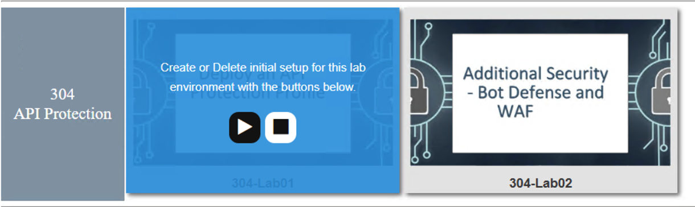
The screen should refresh displaying the progress of the automation within 30 seconds. Scroll to the bottom of the automation workflow to ensure all requests succeeded. If you you experience errors try running the automation a second time or open an issue on the Access Labs Repo.

Section 1.2 - Implement Course-Graing Access Control¶
Task 1 - Create a Provider¶
The cornerstone of the API protection profile is the ability to authorize users using JWT. Unlike Guided Configuration that creates the JWT Provider for you based on a few defined parameters, you must create the provider manually.
Navigate to Access >> Federation >> OAuth Client/Resource Server >> Provider. Click the + (Plus Symbol)
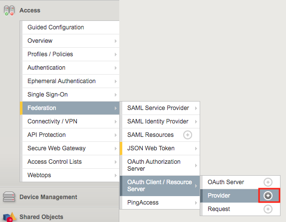
Configure the following parameters:
- Name: api-as-provider
- Trusted Certificate Authorities: ca.acme.com.
- OpenID URL: replace f5-oauth.local with as.acme.com
Click Discover
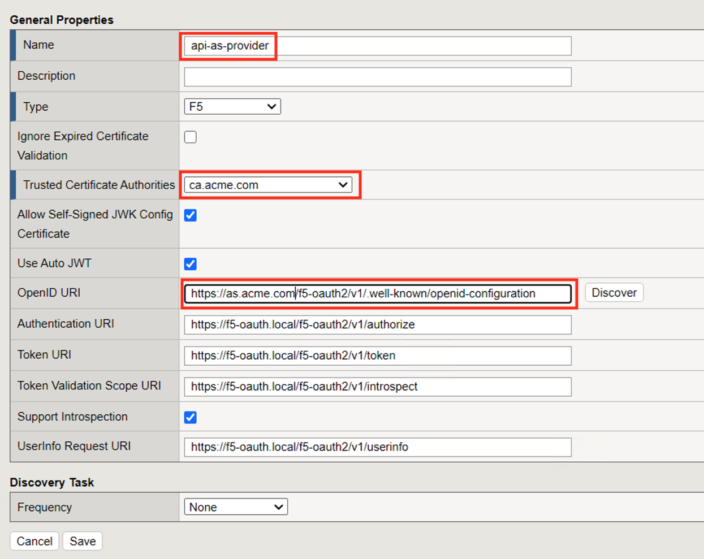
The Authentication URI, Token URI, Token Validation Scope URI, UserInfo URI and keys should be updated.
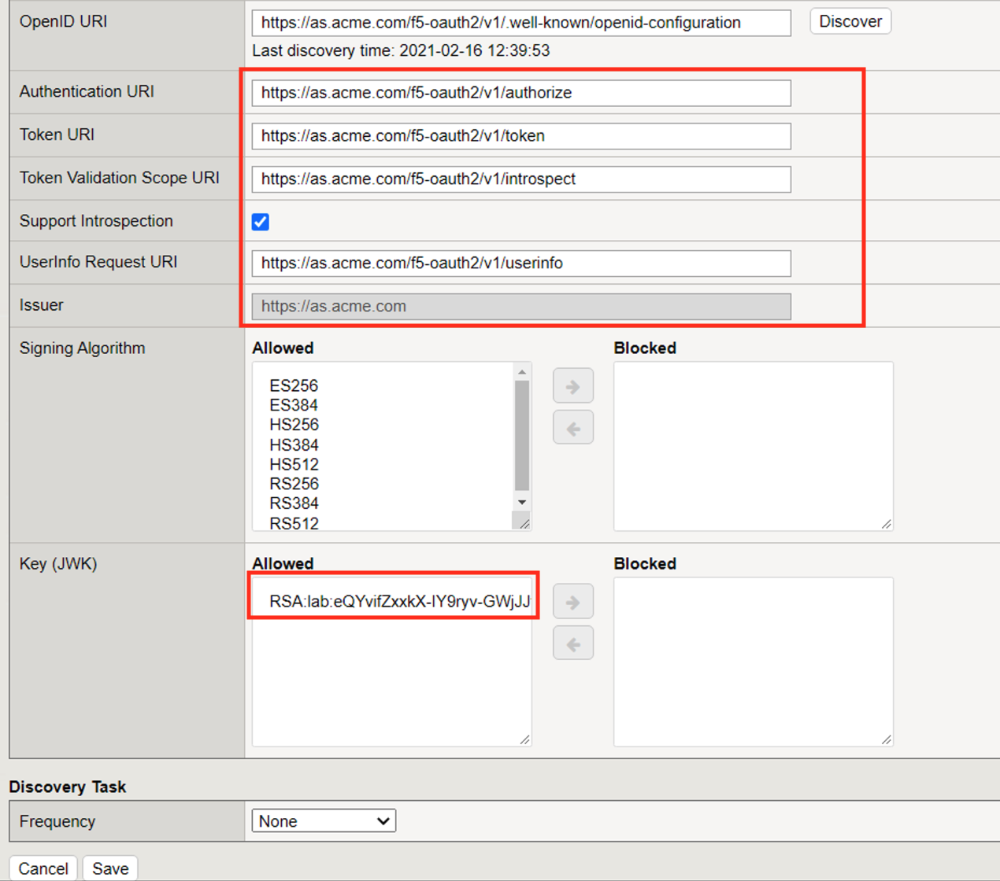
Click Save
Task 2 - Create a JWT Provider¶
Navigate to Access >> Federation >> JSON Web Token >> Provider List. Click the + (Plus Symbol).
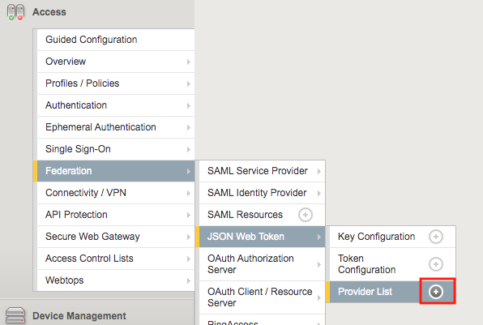
Enter the name: as-jwt-provider
Click Add so api-as-provider is added to list of providers
Click Save

Task 3 - Create an API Protection Profile¶
Navigate to API Protection >> Profile. Click the + (plus symbol)

Note
The JSON file is located on the jumpbox in c:\access-labs\class3\module4\student_files
Enter the following parameters:
- Name: api-protection
- OpenAPI File: Active Directory OpenAPI.json
- DNS Resolver: internal-dns-resolver
- Authorization: OAuth 2.0
Click Add
Click Save

Task 4 - Explore the Path Configuration¶
Note the Spec file contained a single path of /user but it supports four different request methods.
The API server that all requests will be sent to is http://adapi.f5lab.local:81

Task 5 - Associate a JWT Provider¶
Click Access Control from the top ribbon
Click Edit (Per Request Policy)

Notice the same paths displayed in the API Protection profile appear here. Currently there is no fine-grained access control. We will implement it later in the lab.
Click the + (plus symbol) next the Subroutine OAuth Scope Check AuthZ to expand its properties:
Note
The OAuth scope agent currently has a red asterisk since no provider is associated with it.
Click OAuth Scope

Enter the following parameters:
- Token Validation Mode: Internal
- JWT Provider List: as-jwt-provider
- Response: api-protection_auto_response1
Click Save

Task 6 - Create a virtual server¶
Navigate to Local Traffic >> Virtual Servers >> Virtual Server List. Click the + (plus symbol)

Enter the following parameters:
- Name: api.acme.com
- Destination Address/Mask: 10.1.10.102
- Service Port: 443
- HTTP Profile (Client): http
- SSL Profile(Client): acme.com
- Source Address Translation: Auto Map
- API Protection: api-protection
Click Finished
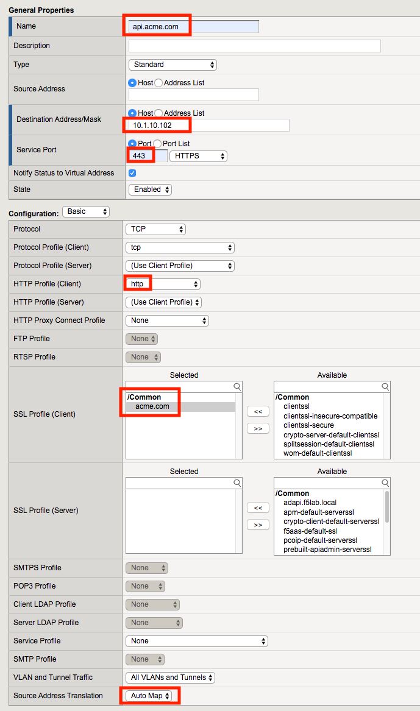 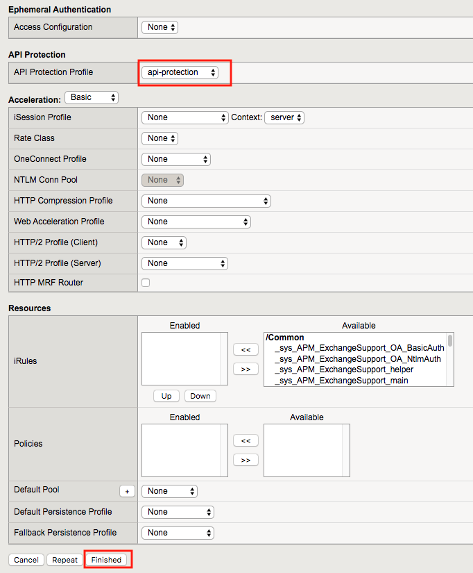
Task 7 - Import Postman Collections¶
From the Jumpbox, open Postman via the desktop shortcut or toolbar at the bottom

Click Yes if prompted for “Do you want to allow this app to make changes to your device?”
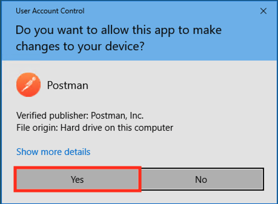
Click Import located on the top left of the Postman application

Click Upload Files

Navigate to C:\access-labs\class3\module4\student_files, select student-class3-module4-lab01.postman_collection.json, and click Open
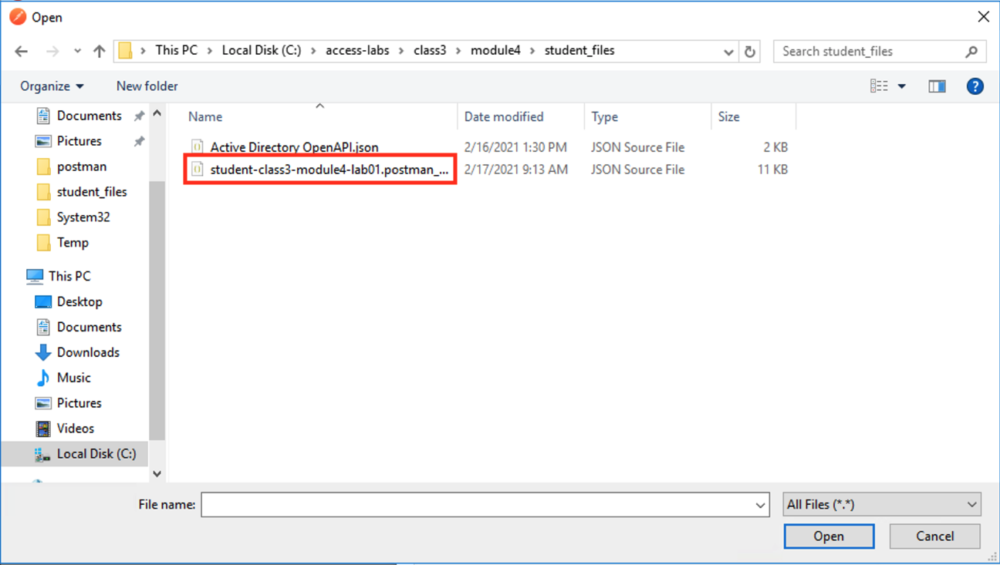
Click Import
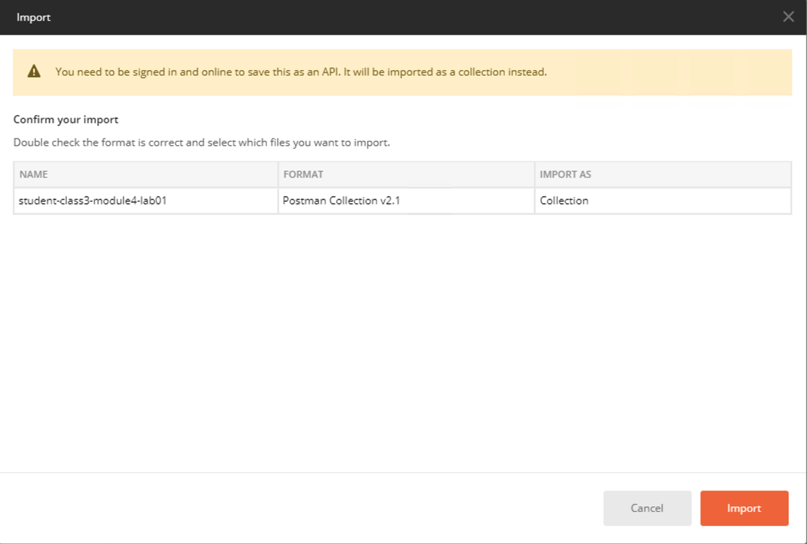
A collection called student-class3-module4-lab01 will appear on the left side in Postman
Task 8 - Retreive your OAuth clientID¶
Expand the student-class3-module4-lab01 Collection
Select the request Request1: Retrieve Postman ClientID
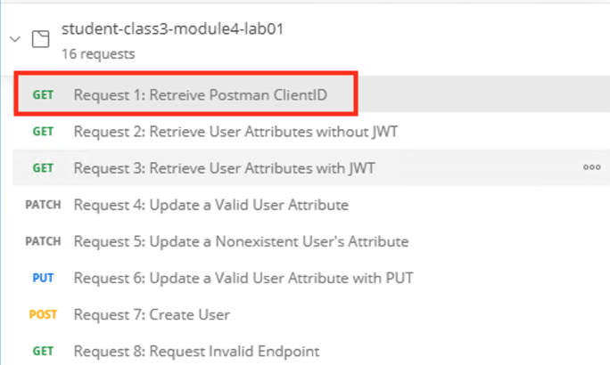
Click Send

You receive a 200 OK with a response body. The clientID is now stored as a Postman Variable to be used in future requests. Your ClientID will not be the same as displayed in the screenshot below.
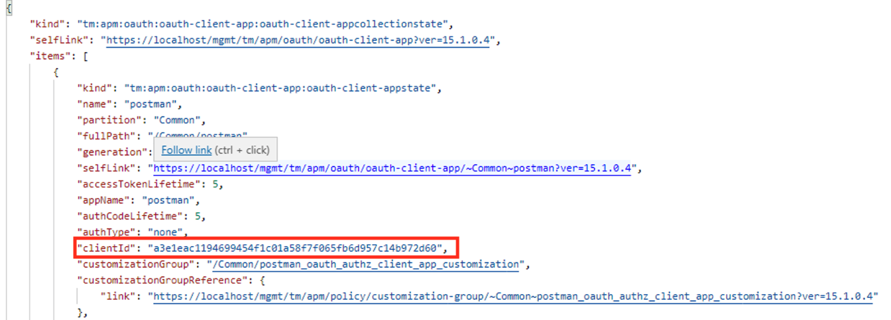
Task 9 - Attempt to Retrieve User1's Attributes without JWT¶
Select the request Request 2: Retrieve User Attributes without JWT
Click Send
You receive a 403 Forbidden response status code since you do not have a valid JWT

Task 10 - Retrieve User1's Attributes with a JWT¶
Select the request Request 3: Retrieve User Attributes with JWT
Select the Authorization tab
Click Get New Access Token
Login using Username: user1, Password: user1

Click Use Token at the top.
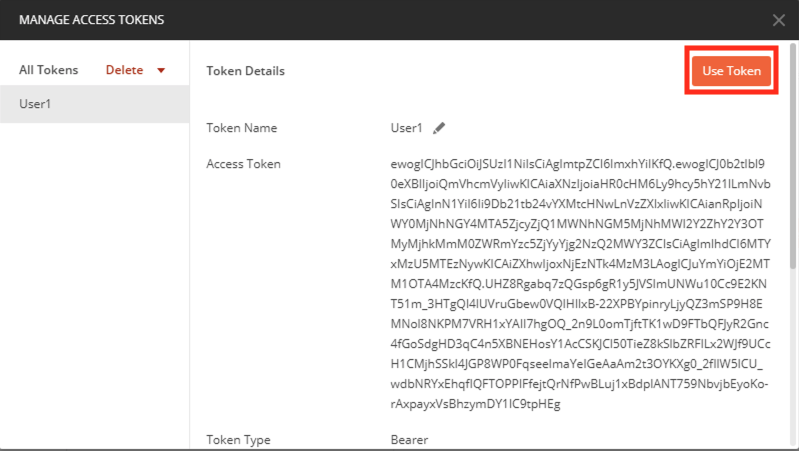
Notice the Access Token field is now populated
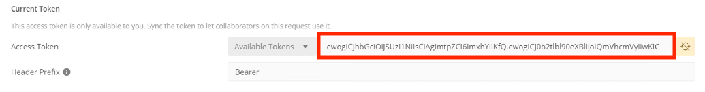
Click Send
You receive a 200 OK response status code with attributes for user1 in the body of the response
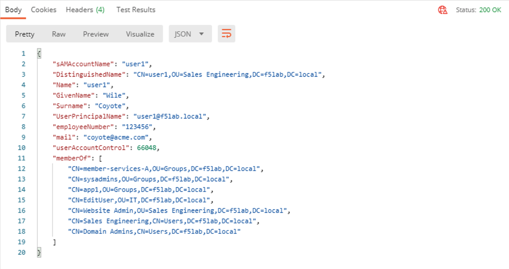
Task 11 - Set a Valid User Attribute¶
Select the request Request 4: Update a Valid User Attribute
Select the Authorization tab
Select the previously created User1 token from the Available Tokens dropdown
The Token field is now populated
Click Send
Note
If you receive a 403 response status code, request a new token. You can change the name of the token request prior to sending by setting the Token Name. You can delete expired tokens by clicking the Available Tokens dropdown, clicking Manage Tokens, and then clicking the trashcan next to the Token.
You receive a 200 OK response status code with a response body that contains user1’s employeeNumber 123456

Task 12 - Set an Nonexistent User’s Attribute¶
Select the request Request 5: Update a Nonexistent User's Attribute
Select the Authorization tab
Select the previously created User1 token from the Available Tokens dropdown
The Token field is now populated
Click Send
Note
If you receive a 403 response status code, request a new token. You can change the name of the token request prior to sending by setting the Token Name. You can delete expired tokens by clicking the Available Tokens dropdown, clicking Manage Tokens, and then clicking the trashcan next to the Token.
You receive a 2O0 OK response status code. The request successfully passed through the API Gateway, but the server failed to process the request.
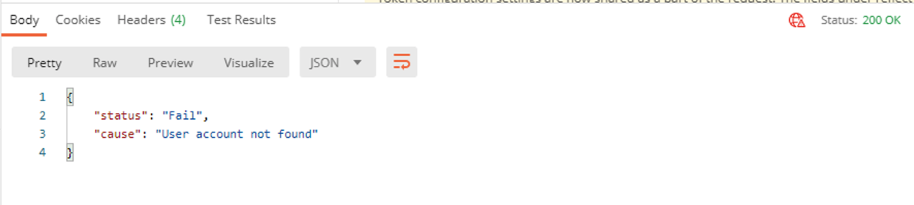
Task 13 - Update a Valid User with PUT¶
Select the request Request 6: Update a Valid User’s Attribute with PUT
Select the Authorization tab
Select the previously created User1 token from the Available Tokens dropdown
The Token field is now populated
Click Send
You receive a 403 Forbidden response status code. This is expected because the PUT Method was not specified in the API Protection Profile for the path /user

Task 14 - Create a User¶
Task 15 - Request invalid endpoint¶
Select the request Request 8: Request Invalid Endpoint
Select the Authorization tab
Select the previously created User1 token from the Available Tokens dropdown
The Token field is now populated
Click Send
You receive a 403 Forbidden response status code. This is expected because the path /hacker/attack was not specified in the API Protection Profile
Section 1.3 - Implement Fine-Grained Access Controls¶
Up to this point any authenticated user to the API is authorized to use them. In this section we will restrict user1’s ability to create users, but will still be able to modify a user’s employee number.
Task 1 - Retrieve Group Membership Subsession Variable¶
Note
In order to implement fine-grained control the session variables that contain the data must be known. This first session shows you how to display the session variables and their values.
From the Jumpbox desktop click on the BIG-IP1 Putty icon

Enter the command sessiondump –delete all to remove any existing APM sessions

Enter the command tailf /var/log/apm. Hit enter a few times to create some space on the screen
From Postman, Select the request Request 3: Retrieve User Attributes with JWT. The Authorization field should already be populated with User1’s token.
Click Send
You receive a 200 OK response status code with attributes for user1 in the body of the response
Note
Your SessionID will be different
Return to the CLI and examine the logs. You will see a message about a new subsession being created. Copy the subsession ID

Exit the logs using Ctrl+Z
Enter the command sessiondump -subkeys <subsessionID>

Scroll through input until you find the session variable for subsession.oauth.scope.last.jwt.groups

Task 2 - Edit the per-request policy¶
Return to BIG-IP1’s management interface and navigate to Access >> API Protection >> Profile. Click Profile to modify the previously created API protection Profile (not the + Plus symbol)
Click Edit Under Per-Request Policy
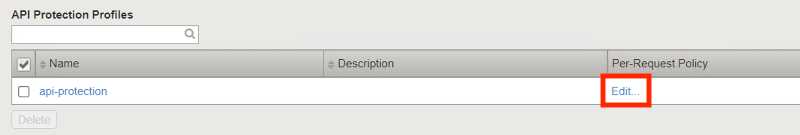
Click the Allow terminal located at the end of the POST /user branch
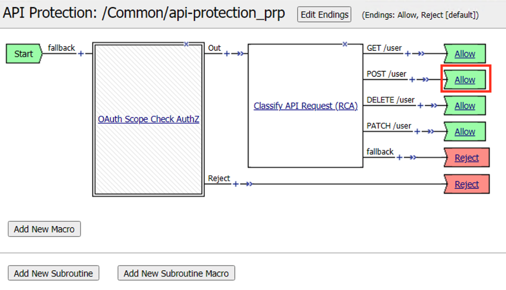
Select Reject
Click Save

Click the + (Plus Symbol) on the POST /user branch
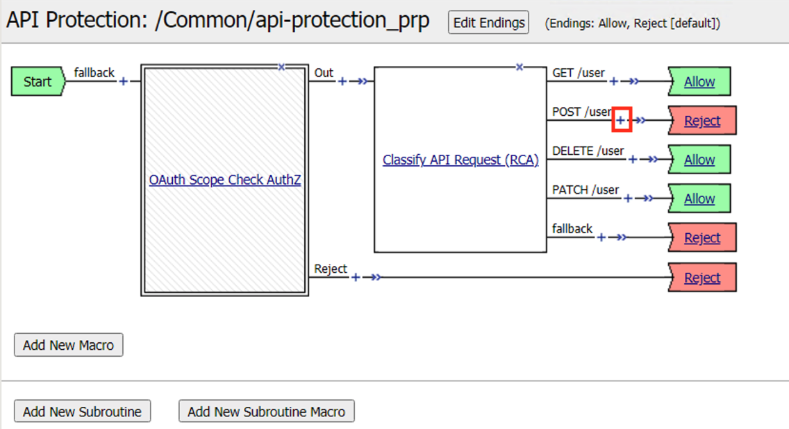
Click the General Purpose tab
Select Empty
Click Add Item

Enter the name Claim Check

Click the Branch Rules tab
Click the Add Branch Rule

Enter Name CreateUser
Click Change

Click the Advanced tab
Enter the string in the notes section to restrict access to only members of the CreateUser Group. Make sure the ” characters are properly formatted after pasting. If they aren’t, simply delete and re-enter them manually.
Click Finished
Note
expr {[mcget {subsession.oauth.scope.last.jwt.groups}] contains “CreateUser”}

Click Save

Click Reject on the CreateUser Branch to permit access
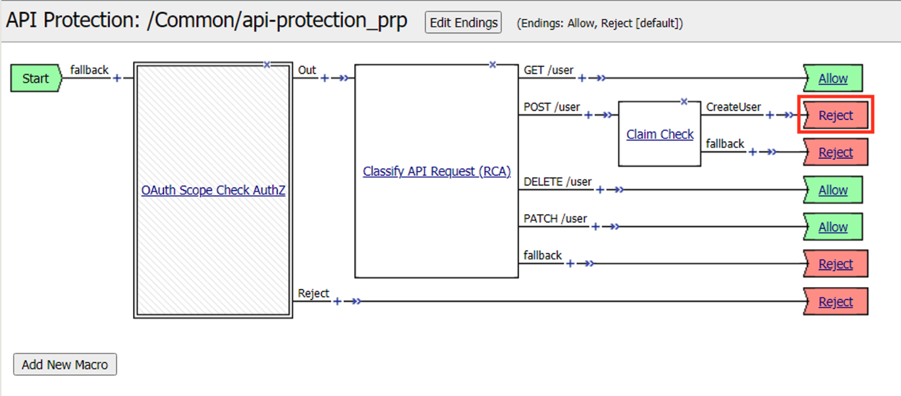
Select Allow
Click Save

Review the Policy Flow
Task 3 - Test the Fine-Grained Access Control with user1¶
From Postman select the request Request 7: Create User
Select the Authorization Tab
Select the previously created User1 token from the Available Tokens dropdown
The Token field is now populated
Click Send
You receive a 403 Forbidden response status code when using user1. User1 does not contain the proper claim data.
Task 4 - Test the Fine-Grained Access Control with user2¶
Select the request Request 7: Create User
Select the Authorization tab
Click Edit token configuration
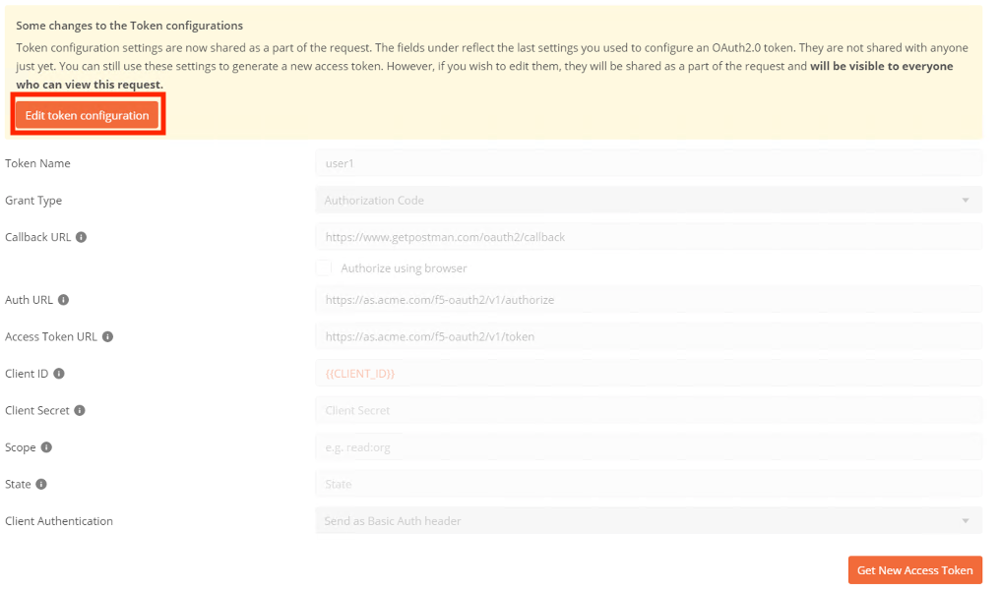
Enter User2 for the Token Name and review the Postman Configuration. Nothing else should need to be modified
Click Get New Access Token
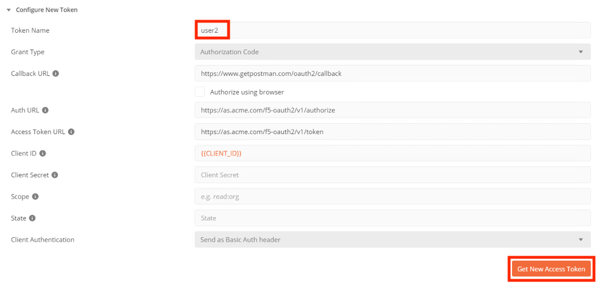
Login using Username: user2, Password: user2

Ensure the User2 Token is selected
Click Use Token at the top right.
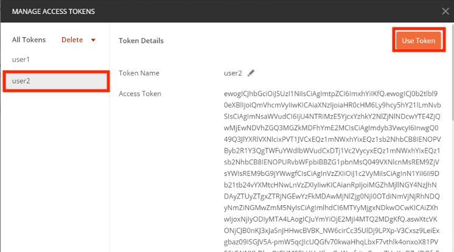
The Token field is now populated
Click Send
You receive a 200 OK response status code when using user2. User2 does contain the proper claim data
Section 1.4 - Implement Rate Limiting¶
The API Protection Profile allows a BIG-IP administrator to throttle the amount of connections to an API through the use of Key Names.
Task 1 - Test pre-rate limiting Access¶
From Postman, Select the request Request 3: Retrieve User Attributes with JWT
Click Save, so the current token is saved as part of the API request.
Click the arrow located to the right of the student-class3-module4-lab01 collection.
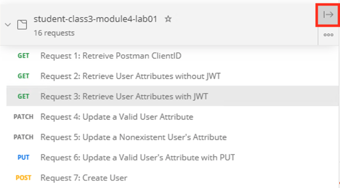
Click Run
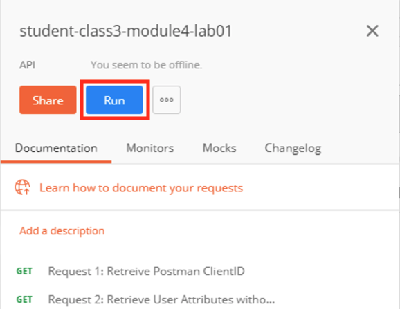
Deselect all requests except Request 3: Retrieve User Attributes with JWT
Set the iterations to 100
Click the blue Run Student-class…. button
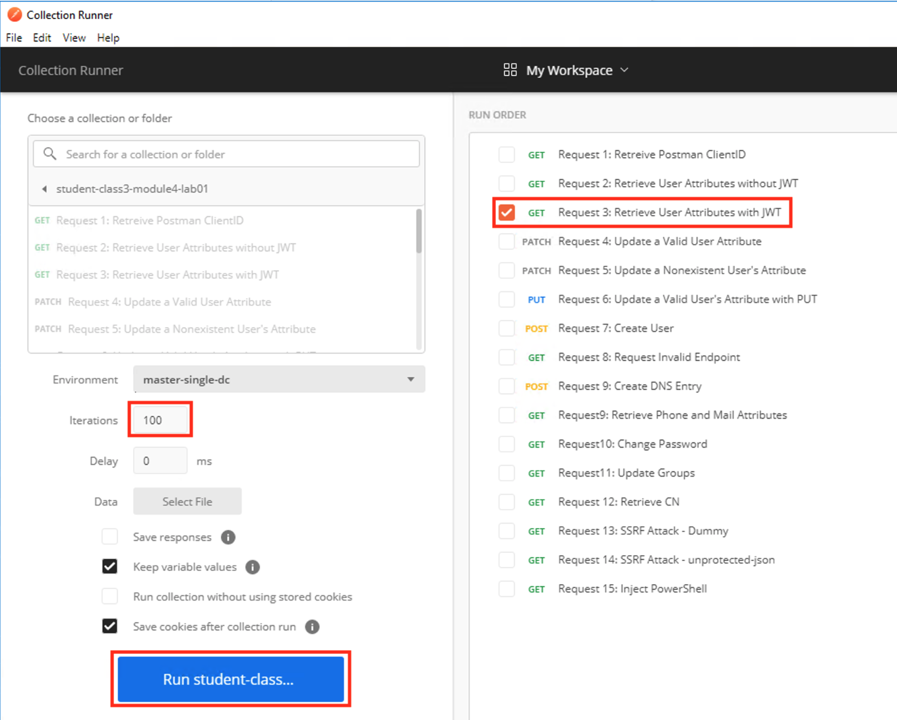
You receive a 200 OK for every request. Leave Runner open
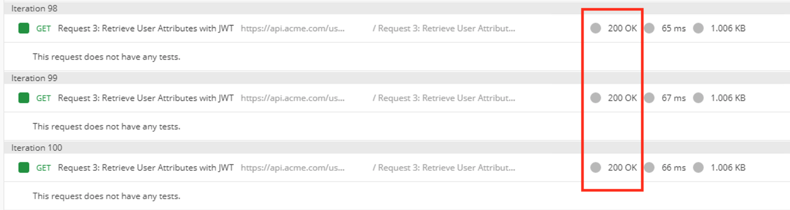
Task 2 - Define the rate limiting keys¶
Navigate to API Protection >> Profile. Click Profile to modify the previously created API protection Profile. Not the + Plus symbol.
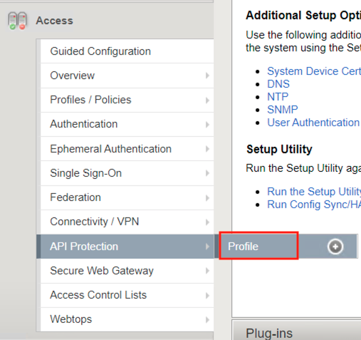
Click api-protection
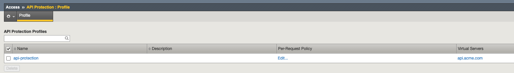
Click Rate Limiting from the top ribbon

Note
The API protection profile default settings contains five Key Names created, but their values are empty. Additional Keys can be created if necessary
Click api-protection_auto_rate_limiting_key1

Enter the Key Value %{subsession.oauth.scope.last.jwt.user}
Click Edit
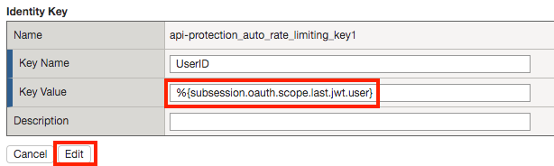
Click api-protection_auto_rate_limiting_key2
Enter the Key Value %{subsession.oauth.scope.last.jwt.groupid}
Click Edit

Click api-protection_auto_rate_limiting_key3
Enter the Key Value %{subsession.oauth.scope.last.jwt.client}
Click Edit
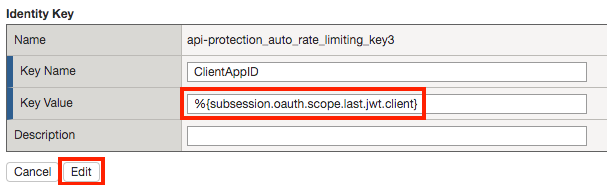
Click api-protection_auto_rate_limiting_key4
Enter the Key Value %{subsession.oauth.scope.last.jwt.tier}
Click Edit

Click api-protection_auto_rate_limiting_key5
Enter the Key Value %{subsession.oauth.scope.last.jwt.org}
Click Edit

Click Save

Task 3 - Create a Rate Limiting Policy¶
Click Create in the rate limiting section

Enter the Name acme-rate-limits
Move all five keys under Selected Keys
Enter 10 for the number of requests per minute
Enter 5 for the number requests per second
Click Add.

Click Save

Task 4 - Apply the Rate Limiting Policy¶
Click Access Control from the ribbon

Click Edit Per Request Policy

Click the + (Plus Symbol) on the Out branch of the OAuth Scope Check AuthZ Macro
Click the Traffic Management tab
Select API Rate Limiting
Click Add Item

Click Add new entry
Select acme-rate-limits
Click Save

Verify the Rate Limiting agent now appears in the appropriate location

{kind=link}
{kind=link}
{kind=link}
{kind=link}
{kind=link}
{kind=link}
{kind=link}
{kind=link}
{kind=link}
Section 1.5 - Onboard a New API¶
Organizations change. With this change, new APIs are introduced requiring modifications to the API Gateway. In this section you will learn how to add additional paths.
Task 1 - Verify no access to API¶
- From Postman, select the request Request 9: Create DNS Entry
- Select the Authorization tab
- Select the previously created User1 token from the Available Tokens dropdown
- The Token field is now populated
- Click Send
- You receive a 403 Forbidden response status code because the the new API has not been published at the Gateway. WARNING: If you executed this step too quickly after the prior 1.6 lab, you may still be rate limited and need to wait a minute.
Task 2 - Add the new API path¶
From the browser, navigate to API Protection >> Profile. Click Profile to modify the previously created API protection Profile (not the + Plus symbol)
Click api-protection
Click Paths
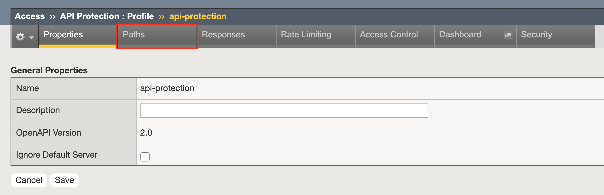
Click Create
The URI /dns
Select the Method POST
Click Add
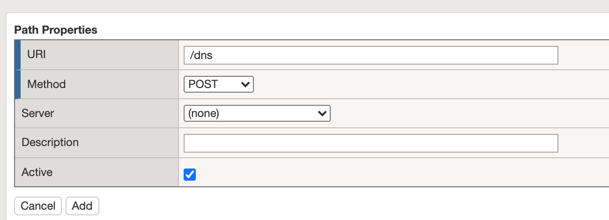
Click Save
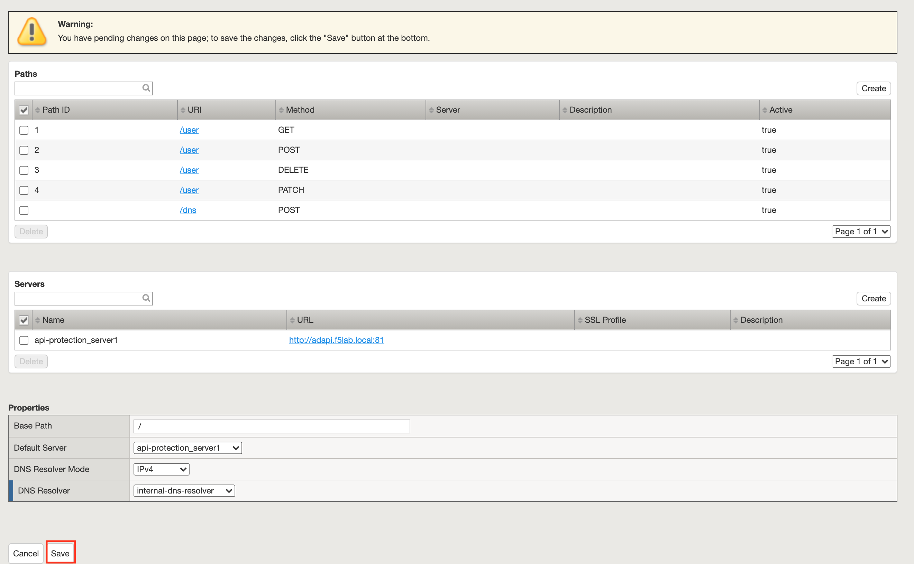
{kind=link}
Task 3 - Test Access to the new path¶
- From Postman, select the request Request 9: Create DNS Entry
- You receive a 200 OK that the endpoint is now published.
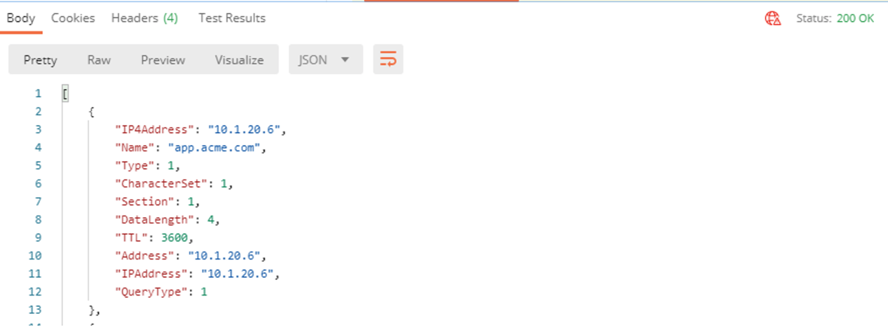